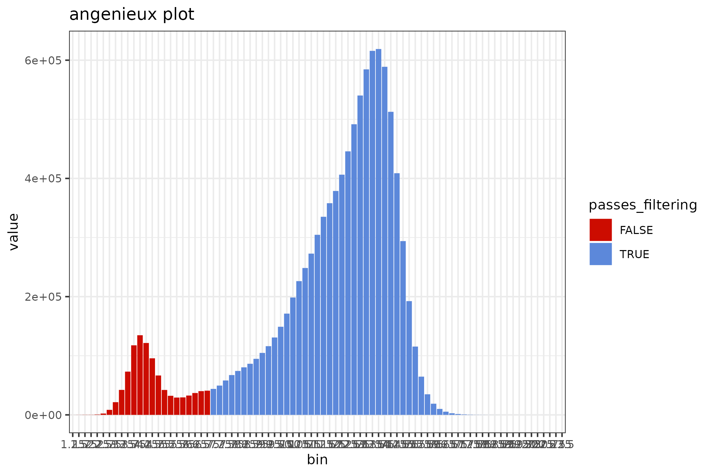
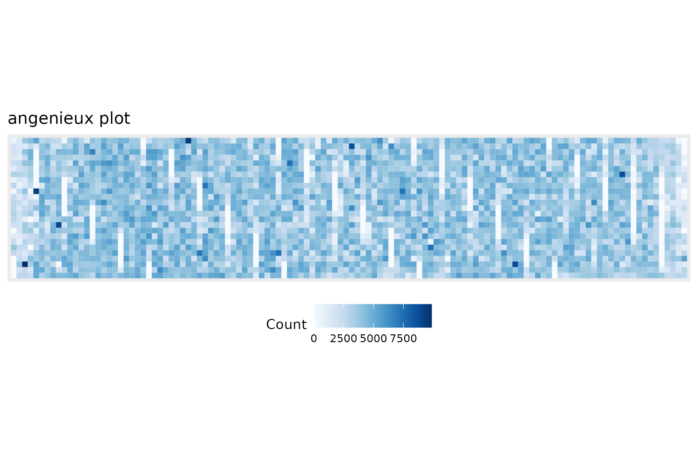

the Nanopore Sequencing Summary file
04_seqsum_files.RmdPreamble
This sequencing_summary_review vignette re-introduces the BasicQC-type tutorial that was previously available through the https://github.com/nanoporetech website.
The workflow provided is implemented through the R TidyVerse and is intended to provide a lightweight set of components that can be mixed and matched for the exploration of the sequencing_summary file that is produced during Guppy-based base-calling.
This report is largely feature-complete with the earlier BasicQC tutorial but has been implemented with a different set of rules and expectations. A couple of figures previously reported have been deprecated for aesthetic reasons. Feedback is welcomed.
Using a real-world sequencing_summary file.
The floundeR R package provides an example sequencing_summary file. This is 10,000 sequence reads long and provides insight into what is possible with the software. For this demonstration we’ll have a look at something a little more impressive and illustrative of what the software is intended to do.
s3://ont-open-data is a data repository hosted by Amazon. The human genome, GM24385 / HG002, has been sequenced on a PromethION and deposited at the registry read the blog post. We will download the dataset to demonstrate what can be done.
sequencing_summary <- "sequencing_summary_PAG07165_2dfda515.txt"
# don't perform the AWS download if the file has already been grabbed ...
if (!file.exists(sequencing_summary)) {
aws.s3::save_object(
"/gm24385_2020.11/flowcells/20201026_1645_6B_PAG07165_d42912aa/sequencing_summary_PAG07165_2dfda515.txt",
bucket="s3://ont-open-data/",
region="eu-west-1",
overwrite=FALSE)
}
Define input files and create the SequencingSummary R6 object
The floundeR package has been implemented largely as object oriented R through the usage of R6 objects. This means that instead of passing tables of data between methods that filter and visualise data facets we will be processing objects that contain their own methods and filters.
The first step in the process is to create out very first object; this is a SequencingSummary object and it is instantiated by calling its initialize constructor with the SequencingSummary$new() call. We will pass the file.path to our sequencing summary file.
Let’s also check that the object creation has worked by asking about the flowcell platform - this should return the expected sequencing platform.
# sequencing_summary <- flnDr("sequencing_summary.txt.bz2")
seqsum <- SequencingSummary$new(sequencing_summary)
# check the flowcell platform - ensures that something valid has been created
seqsum$flowcell$platform
#> Preparing channel count information
#> [1] "PromethION"What is this$mischief?
As discussed in the section above, the floundeR objects have been wrapped as R6 objects. In the code seqsum is an object and the $ is used to access stored variables, functions and active-bindings. It just happens that seqsum$flowcell returns a Flowcell object and this has a method called platform that returns the sequencing platform used.
While these classes make life simpler this can create some slightly scary code; within this package we have tried to ensure that the methods accessible through the R6 objects are also available through magrittr::%>% pipes - the author of this package finds that this often makes for simpler code.
# let's see if things are really similar
seqsum$flowcell
#> <floundeR::Flowcell>
seqsum %>% to_flowcell()
#> <floundeR::Flowcell>The majority of floundeR classes provide a simple $as_tibble() method that returns a tibble of data that the class operates on. For the SequencingSummary object this is the whole imported file - we can have a check of the imported data using the following command
knitr::kable(head(seqsum$as_tibble()),
caption="An excerpt of imported data as prepared by $as_tibble",
booktabs=TRUE, table.envir='table*', linesep="") %>%
kable_styling(latex_options=c("hold_position", font_size=8))| channel | start_time | duration | passes_filtering | sequence_length_template | mean_qscore_template |
|---|---|---|---|---|---|
| 2269 | 63.87225 | 0.89850 | TRUE | 383 | 13.339876 |
| 2757 | 63.62725 | 0.98925 | FALSE | 267 | 3.216377 |
| 1818 | 63.63175 | 2.67975 | TRUE | 1373 | 13.076194 |
| 1846 | 65.79525 | 1.08700 | TRUE | 422 | 9.036358 |
| 1565 | 63.73250 | 3.51100 | TRUE | 1701 | 12.828937 |
| 998 | 63.80150 | 2.95275 | TRUE | 1283 | 11.641397 |
The SequencingSet and primitive QC measures
In the previous section we created our SequencingSummary object. We can obtain a SequencingSet from the SequencingSummary object by calling its $sequencingset active binding; here we’ll use the magrittr::%>% pipe for simplicity.
seqsum %>% to_sequencing_set()
#> <floundeR::SequencingSet>The SequencingSet in turn has a collection of methods that can be used to structure and visualise the data. The first that we’ll have a look at is the $enumerate method that returns an Angenieux object for data visualisation.
knitr::include_graphics(
seqsum$sequencingset$enumerate$to_file("figure_2.png")$plot())
#> saving plot as [png]
There are a plethora of ways through which the Angenieux object can be used to style, colour and manipulate the graph - please do have a look at the methods documentation.
The SequencingSet object can also be used to access simple but primitive summary statistics such as mean sequence length, N50 length etc
seqsum$sequencingset$N50
#> [1] 29925
seqsum$sequencingset$mean
#> [1] 21933.22Review sequence length distributions
The distribution of sequence lengths is an important metric that is impacted by choice of library preparation, starting DNA isolation etc. A plot of length distributions is prepared from the same SequencingSet object that we reviewed in the previous section.
knitr::include_graphics(
seqsum$sequencingset$read_length_bins(bins=35, outliers=0.001)$
to_file("figure_3.png")$
plot(style="stacked"))
#> saving plot as [png]Review quality distributions
The distribution of sequence lengths is an important metric that is impacted by choice of library preparation, starting DNA isolation etc. A plot of length distributions is prepared from the same SequencingSet object that we reviewed in the previous section.
knitr::include_graphics(
seqsum$sequencingset$quality_bins(bins=100)$
to_file("figure_4.png")$
plot(style="stacked"))
#> saving plot as [png]
Plot flowcell spatial density
knitr::include_graphics(
seqsum$flowcell$density_data$to_file("figure_1.png")$plot())
#> saving plot as [png]